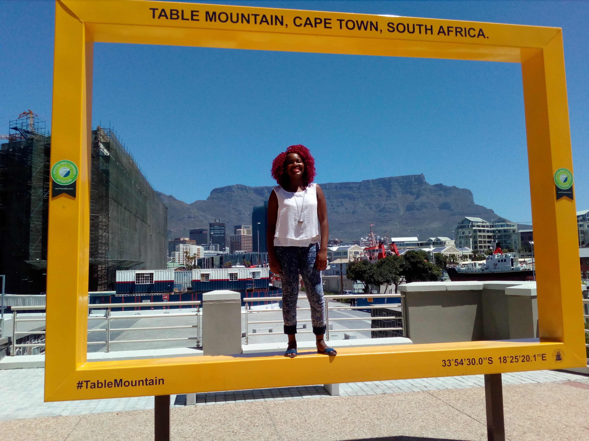
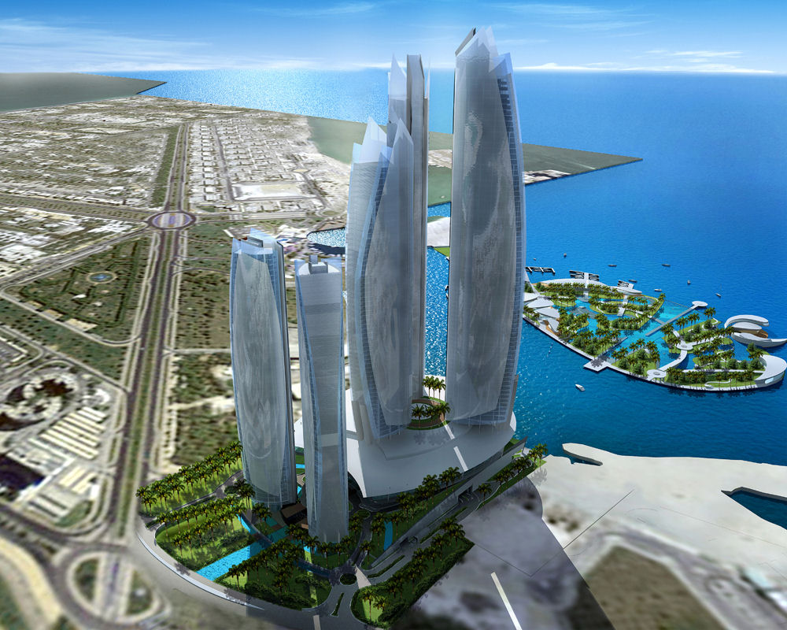

Thembeka George


The city I would like to visit
Abu-Dhabi
I feel like its beauty is the most captivating and mesmerising thing in the world. Hell, I'd be insane to not go there for a visit
A foreign language
| English | Italian |
|---|---|
| Sorry | Scura |
| Please | Per favore |
| Thank you | Grazie |
| Reply to Thank you | Prego |
Historic Places in the V&A Waterfront
Clock Tower
- The Victorian Gothic-style Clock Tower is an icon of the old Cape Town harbour. It was the original Port Captain's Office built in 1882.
- The pointed Gothic windows surrounds the structure with a clock, imported from Edinburgh, as a main feature.
- The red walls are the same colour as they were in the 1800's, having been carefully matched to scrapings of the original paint.

Swing Bridge

- The bridge swings over the link between the Alfred Basin and the Victoria Basin in the Victoria & Alfred Waterfront.
- It was designed and constructed in 1997.
African Trading Port
- The port evolved greatly over the centuries and currently consists of several main components:
- The Ben Schoeman Dock: This is the larger outer dock of the port, where the container terminal is situated.
- The Duncan Dock: This is the smaller and the older inner dock, containing the multi-purpose and fruit terminals as well as a dry dock, repair quay and tanker basin.